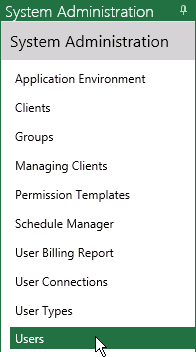
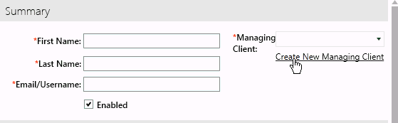

During initial product installation, a “primary” Eclipse
system administrator is defined—a user who is a member of the Super Admin
group and is the first authorized user defined in the Eclipse Data Server.
This administrator will be the first person to log in to Eclipse (and
probably Eclipse Administration). Once the administrator has familiarized
him/herself with Eclipse, he or she will typically configure one or more
administrators who will continue day-to-day management of Eclipse.
-
All
Eclipse components have been installed.
-
and the Authorization Server are installed and running.
|

|
Note: Prior to version 2015.2.0,
this component was called “Nucleus.”
|
-
You
have the URL for Eclipse.
-
You have the primary
administrator’s user name and password, by default:
For new installations, one of the first steps an administrator
might take is to add him- or herself as an administrative user. Other
administrators can also be added if known at this time.
-
Getting started: it is strongly recommended
that you read Managing Clients
and Security to learn about Eclipse
managing clients and security before you start working in Eclipse. Refer
to these sections while you complete the following steps.
-
Start Internet Explorer and enter or navigate
to the URL defined for Eclipse.
-
On the Eclipse log-in window, enter the default
primary administrator’s user name and password.
-
For security purposes, you will be required
to change the password. When prompted, create a new password that:
-
is
at least 8 characters long,
-
includes
at least one uppercase and one lower-case character, and
-
includes
at least one number and one non-alphanumeric character.
Store the new password
in a safe place.
-
Click  and
select Administration.
and
select Administration.
-
In the System Administration pane, select Users as shown in the following
figure.

-
Click  .
.
-
In the Summary
area of the Users tab, click Create New Managing Client as shown
in the following figure.

|
|
Note: In Eclipse,
managing clients provide the basis of the relationship between cases
and reviewers. For service providers, managing clients are the companies
and firms the provider does business with. For law firms, the firm
itself is the managing client.
|
- Enter needed details in the Create
Managing Client dialog box and click Save.
|

|
In all
aspects of Eclipse case and user configuration, required entries
are indicated by red asterisks, *.
|
-
Optional:
-
In
the Details area of the Users tab, click Create
New User Type as shown in the following figure:
What is a user type? Eclipse allows
users to be identified by type, such as “Billable” and “Non-billable.”
You can create any user types needed to track activities at your company.
-
Enter
needed details in the Create User Type
dialog box and click Save.
-
Complete other details as needed to define
the new user.
-
Enter and confirm a password for the new user.
Optionally, select the User must change password on next logon option.
This option requires users to create their own personal passwords the
first time (or next time) they log in to Eclipse.
-
When entries are completed, click Save
at the bottom of the Users tab.
Make a note of the new user’s login credentials - username and password.
-
Optional: repeat these steps to add other administrative
users.
-
In the System Administration pane, click Groups.
-
In the list of groups, click Super
Admin.
|
|
Note: In Eclipse, users
are combined into groups that are assigned to cases for review and
management purposes. The Super Admin group is intended to be the main
group of administrators who govern all aspects of Eclipse at their
site. Members of this group can perform all actions within Eclipse
and Eclipse Administration.
|
-
At the bottom of the Group
Users area, click Add/Remove Users.
-
In the Select
Group Users dialog box, select the user(s) you just defined who
should be primary Eclipse administrators.
-
Click Apply
in the dialog box, then Save in
the Groups tab.
-
Optional: Complete the following steps to delete
or edit details for the default Eclipse administrator (administrator@iprotech.com)
to make it relevant to your site:
-
Repeat
step 5 and step 6 to access the user configuration screen.
-
Select
the default administrative user and click  to delete
the user or
to delete
the user or  to edit
the user.
to edit
the user.
-
If
deleting the user, click Yes in
response to the confirmation message.
-
If
modifying user details, make needed changes and click Save.